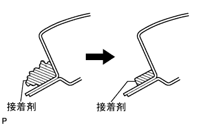
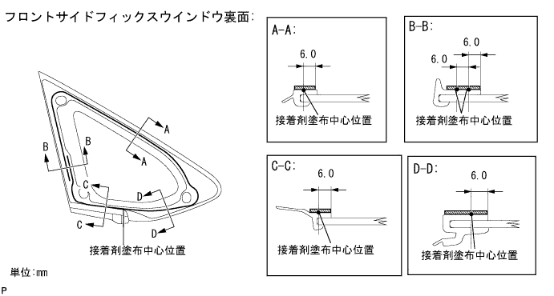
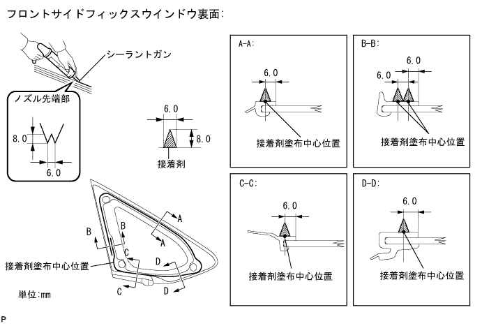

Front Side Fixed Window Assembly LH Installation |
| 1. Clean Front Side Fixed Window Assembly LH |
 |
Using a scraper or equivalent, scrape off any adhesive remaining on the front side fixed window assembly LH. (When reusing front side fixed window assembly LH)
Clean the outer circumference of the front side fixed window assembly LH with white gasoline.
| 2. Install Front Side Fixed Window Assembly LH |
 |
Clean Body Installation Surface
If the adhesive remaining on the vehicle has significant unevenness, smooth it using a utility knife.
Clean the body installation surface with white gasoline.
Work before Installing Front Side Fixed Window Assembly LH
Attach suction cups to the front side fixed window assembly LH.
Using the specified primer, apply it to the areas where the body surface of the vehicle is exposed (where no adhesive remains).
Using the specified primer, apply primer to the front side fixed window assembly LH at the positions shown in the illustration.

Cut off the tip of the adhesive nozzle as shown in the illustration below.
Load the adhesive into a sealant gun.
Apply adhesive in a bead to the bonding area of the front side fixed window assembly LH as shown in the illustration below.

Install Front Side Fixed Window Assembly LH
Holding the suction cups, install the front side fixed window assembly LH.
Lightly press the front surface of the front side fixed window assembly LH to ensure that it is fully sealed.
 |
Using a spatula, correct any excess or insufficient adhesive.
Remove any excess adhesive before it hardens.
Using protective tape or equivalent, hold the front side fixed window assembly LH in place until the adhesive hardens.
| 3. Inspect for Water Leaks and Repair |
After the adhesive has hardened, pour water over the vehicle from the outside and check that there is no water leaking into the cabin.
If there is a water leak, allow it to dry and then fill with Three Cement Black.
Remove the protective tape and packing tape that were applied.
| 4. Install Front Pillar Garnish LH |
 |
Remove the protective cover.
Install a new front pillar garnish clip to the garnish.
 |
Insert the guide at the front end.
Engage the front pillar garnish clip and clip, and install the front pillar garnish LH.
| 5. Install Front Pillar Garnish Corner Piece LH |